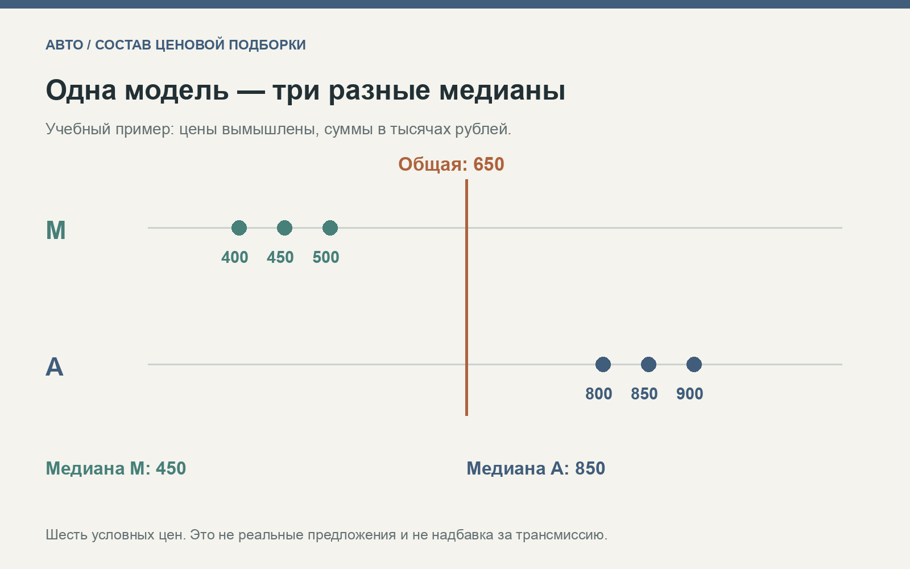

Одна модель, разные коробки: почему общей медианы недостаточно для выбора автомобиля
Покупатель открывает сводку по знакомой модели и видит типичную цену. Затем включает нужную коробку передач — и получает предложения совсем другого уровня. Это не обязательно ошибка каталога. Общая подборка могла объединить разные поколения, двигатели и трансмиссии. Число правильно описывает собранные цены, но отвечает на более широкий вопрос, чем тот, который интересует конкретного человека.
Сравнение стоит начать с требований к машине. Если нужна определённая техническая версия, сначала найдите сопоставимые предложения, а затем изучайте их середину и разброс. В этом материале разберём учебный набор и порядок проверки. Все числовые значения в примере вымышлены; они не взяты из реальных объявлений и не показывают действительные надбавки за тип коробки.
1. Сформулируйте вопрос до просмотра итоговой цены
Вопрос «сколько стоит эта модель» удобен для первого знакомства с порядком бюджета. Вопрос «какие предложения подходят для моей задачи» требует более точных условий. Покупателю могут быть важны конкретное поколение, двигатель, трансмиссия и тип кузова. Нельзя незаметно заменить эти ограничения одним названием модели и считать, что итоговая цена описывает нужную версию.
На странице оценки машины по объявлениям «Мотор» описан подбор по марке, модели и близкому году выпуска. Сначала используется диапазон ±2 года, а при недостатке предложений он расширяется до ±4. Показываются медиана и центральная половина цен. Описание проверено 20 октября 2026 года. Оно полезно как исходный ориентир, однако конкретный состав найденных машин нужно рассматривать отдельно.
Не следует приписывать этой странице правила, которые не описаны в методике: например, гарантированный отбор одной технической версии или автоматическую денежную поправку за тип трансмиссии. Для своего сравнения покупатель может добавить необходимые признаки в отдельную таблицу. Важно ясно различать описание чужого сервиса и собственную процедуру анализа.
2. Название коробки ещё не определяет техническую версию
Общее обозначение в объявлении не всегда содержит достаточно информации. Чтобы сравнение было предметным, нужно уточнить конкретную модификацию автомобиля и данные о трансмиссии. Если сведения противоречат друг другу или отсутствуют, пометьте запись как требующую уточнения. Не заполняйте пропуск автоматически тем вариантом, который кажется наиболее вероятным.
Задача здесь не в том, чтобы заранее объявить один тип коробки лучше другого. Требования к эксплуатации различаются, а состояние отдельного экземпляра нельзя вывести из короткого названия. Для анализа цены полезно сначала установить, какие именно машины представлены в группах и какие существенные признаки остаются неизвестными.
Сохраняйте исходное описание рядом с нормализованной категорией. Тогда спорный случай можно будет пересмотреть, не теряя текст продавца. Если после уточнения версия изменилась, обновите её принадлежность к группе и пересчитайте результат. Прозрачная исправляемая таблица полезнее классификации, в правильности которой невозможно разобраться.
Схема собственной проверки сопоставимости. Она не описывает внутренние настройки автомобильного каталога.
3. Учебный набор: две группы и одна общая середина
Возьмём шесть полностью вымышленных предложений одной условной модели. В группе М с указанной механической коробкой цены равны 400, 450 и 500 тысячам рублей. В группе А с общим обозначением «автомат» — 800, 850 и 900 тысячам. Для простоты здесь используются лишь названия категорий; реальная классификация потребовала бы уточнения технических версий.
Медиана первой группы составляет 450 тысяч, второй — 850 тысяч. Если соединить все шесть цен, две центральные величины будут равны 500 и 800 тысячам. Их среднее — 650 тысяч — станет общей медианой. В учебной подборке вообще нет предложения по этой сумме: статистическая середина не обязана совпадать с ценой отдельной карточки.
Из общей медианы нельзя заключить, что нужный покупателю автомобиль обязательно доступен за 650 тысяч. И из разницы групп нельзя вывести рыночную стоимость самой коробки. Мы пока знаем только запрашиваемые суммы в двух придуманных наборах, причём остальные характеристики автомобилей не выровнены.
| Учебная группа | Цены предложений, тыс. руб. | Медиана, тыс. руб. |
|---|---|---|
| М: обозначение «механика» | 400, 450, 500 | 450 |
| А: обозначение «автомат» | 800, 850, 900 | 850 |
| Обе группы вместе | 400, 450, 500, 800, 850, 900 | 650 |

Все шесть цен вымышлены. Диаграмма объясняет объединение групп и не показывает реальные цены технических версий.
4. Что именно говорит медиана
Медиана описывает середину упорядоченного ряда. При чётном количестве наблюдений она определяется через два центральных значения. Различия способов описания центра разобраны в справочнике NIST о среднем и медиане. Для покупателя важно понимать, к какому набору относится вычисленное число и какие условия применялись при отборе.
Показатель не проверяет достоверность характеристик, не оценивает состояние узлов и не гарантирует наличие подходящего экземпляра в продаже. Он также не превращает объявления в подтверждённые сделки. Середина запрошенных сумм остаётся характеристикой предложения, пока нет других данных, позволяющих поставить более узкий вопрос.
У общей и групповой медианы могут быть разные задачи. Первая даёт обзор объединённой категории, вторая помогает описать выбранную часть. Между ними нет необходимости выбирать единственную «правильную» цифру для всех ситуаций. Достаточно не подменять одну задачу другой и сохранять состав каждой подборки видимым.
5. Почему разницу нельзя целиком приписать трансмиссии
В реальных объявлениях вместе с типом коробки могут меняться двигатель, поколение, комплектация, возраст и известная история обслуживания. Если сравнить две группы без учёта этих различий, получится описание сочетаний признаков. Оно не выделит самостоятельный вклад одного технического узла в цену.
Поэтому фраза «автомат дороже на столько-то» требует уточнения: о каких машинах, периоде и правилах отбора идёт речь? Если речь всего лишь о разнице двух медиан объявлений, так и нужно написать. Более сильное причинное объяснение потребовало бы дополнительных данных и метода, способного обоснованно учитывать остальные различия.
Даже близкие по характеристикам карточки могут описывать разное состояние конкретных автомобилей. Сравнение предложения полезно для подготовки списка кандидатов, но последующее решение опирается на осмотр и подтверждённые сведения. Не нужно расширять статистический вывод до технической гарантии.
6. Не исправляйте маленькую выборку скрытым смешением
После точного отбора может остаться мало объявлений. Это ограничение задачи стоит показать явно. Если добавить другую коробку, поколение или существенно более широкий возраст, количество вырастет, но изменится смысл группы. Новые наблюдения не становятся подходящими только потому, что их теперь больше.
Можно вести две подборки: строгую и расширенную. В первой сохраняются обязательные требования, во второй отмечается, какие условия ослаблены. Тогда покупатель видит, за счёт чего увеличился выбор, и сам решает, приемлемо ли это изменение. Середины таких групп также следует подписывать отдельно.
Если в строгой группе всего несколько карточек, полезно прочитать каждую и уточнить существенные признаки. Иногда это даст больше практической информации, чем дополнительное агрегирование. Важно не выдавать отсутствие подходящих данных за подтверждение того, что нужная машина обязательно должна стоить рядом с общей медианой.
7. Проверка состояния относится к конкретной машине
Для выбранного экземпляра уточните выполненные работы, известные недостатки и доступные подтверждения обслуживания. Отдельно запишите вопросы, на которые пока нет ответа. Формулировка «всё обслужено» становится полезнее после расшифровки: что именно сделано, когда и чем это подтверждается.
Для знакомства с общими техническими вопросами подходит руководство RAC по покупке подержанного автомобиля. Это британский источник; его юридические процедуры нельзя автоматически переносить на местную сделку. Необходимый объём технической проверки определяют применительно к конкретному автомобилю, при необходимости с компетентным специалистом.
Не стоит заменять диагностику технической репутацией всей категории. Описание типа трансмиссии не сообщает, какие работы потребуются выбранной машине сейчас. Подтверждённые замечания и необходимые первые расходы вносятся в собственную таблицу отдельными строками, чтобы не потеряться за сравнением цен объявления.
8. Отдельно считайте цену и собственные первые расходы
Цена продавца относится к предложению. Оценка необходимых работ относится к результатам конкретной проверки. Расходы на поездку и оформление зависят от ситуации покупателя. Эти величины можно сложить для собственной задачи, но желательно сохранить их исходное происхождение и ограничения.
Если у части вопросов нет обоснованной денежной оценки, не заменяйте её нулём. Укажите, что остаётся уточнить и влияет ли это на решение. Произвольное назначение суммы каждой возможной неисправности тоже не делает расчёт точнее: оно лишь создаёт подробную таблицу неподтверждённых предположений.
Сравнивать полезно несколько уровней: соответствие обязательной версии, известное состояние и подтверждённые расходы. Сильный результат на одном уровне не обязан перекрывать существенный нерешённый вопрос на другом. Если требуемая версия не подходит по бюджету после проверки конкретных экземпляров, можно изменить условия поиска осознанно, а не подгонять исходные данные под желаемый итог.
9. Карточка сравнения вместо одной обещающей цифры
Для финального списка оставьте модель, поколение, двигатель, уточнённый тип коробки, год, заявленную цену и дату просмотра. Рядом сохраните сведения об обслуживании, результаты проверки, подтверждённые первые расходы и открытые вопросы. Эта карточка связывает исходный выбор с фактическими особенностями кандидатов.
Общая ценовая середина помогает начать исследование. Точное описание версии сужает его до нужных предложений. Осмотр и собственный бюджет позволяют перейти от каталога к решению о конкретной машине. Если эти этапы не смешивать, разница между группами станет поводом задать правильные вопросы, а не готовой формулой стоимости коробки передач.
О данных: все цены и группы в учебном примере вымышлены. Методика указанного автомобильного ресурса проверена 20.10.2026. Материал подготовлен с использованием ИИ в рамках его продвижения. Цены предложений не являются подтверждёнными ценами сделок.